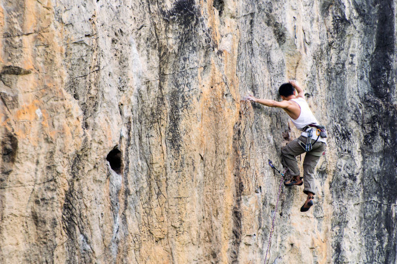
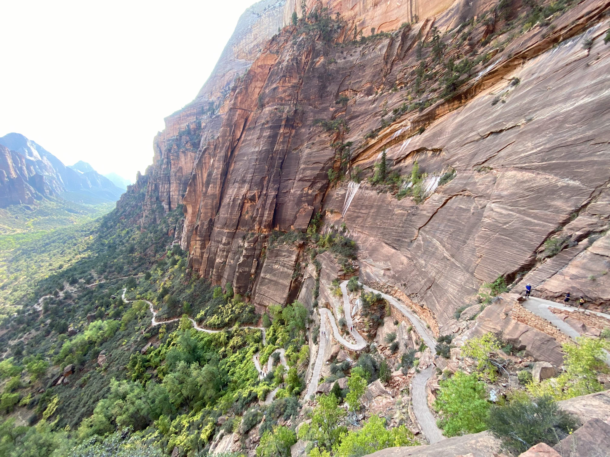
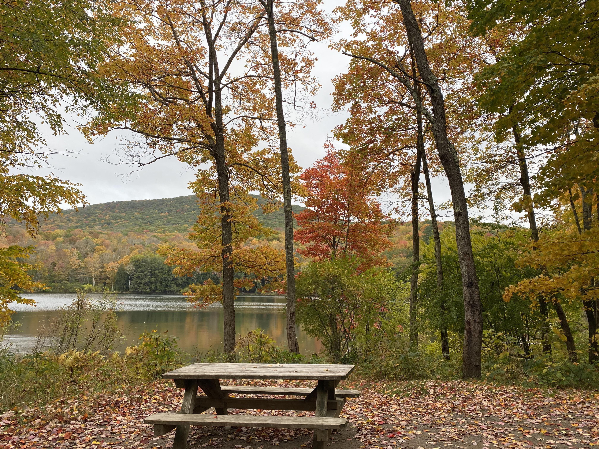

I often travel to beautiful places to climb rocks, including Red River Gorge (KY), Hueco Tanks (TX), Yangshuo (China), Red Rock Canyon (NV), New River Gorge (WV), Stone Fort (TN), Yosemite (CA), Bishop (CA), etc. Below is a picture taken in Yangshuo (2017).
My family enjoy hiking and camping. Some of the nicest camping experiences are those in the colorful fall. Below are a hiking trail in Zion National Park, UT (2020) and a campsite in the Catskill Mountains in NY (2021).
 